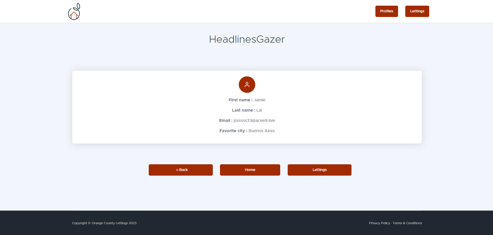

Usage Guide
Whether you start this project or use the site, here are the instructions for using it properly !
- Notes :
You can at any time click on logo in the header to go back to main page
In subpages you can click on the bottom button to navigate to the specified page
Main Page
- Here you can see two buttons :
On the left button « Profiles » you have access to the list of all profiles registered
On the right button « Lettings » you have access to the list of all lettings registered
Screenshot from website
Profiles Main Page
Here you can see the list of registred profiles
You can click on a profile to enter his details

Screenshot from website
Profile Details Page
Here you can see the details of a profile
Screenshot from website
Lettings Main Page
Here you can see the list of registred lettings
You can click on a letting to enter his details

Screenshot from website
Letting Details Page
Here you can see the details of a letting
Screenshot from website